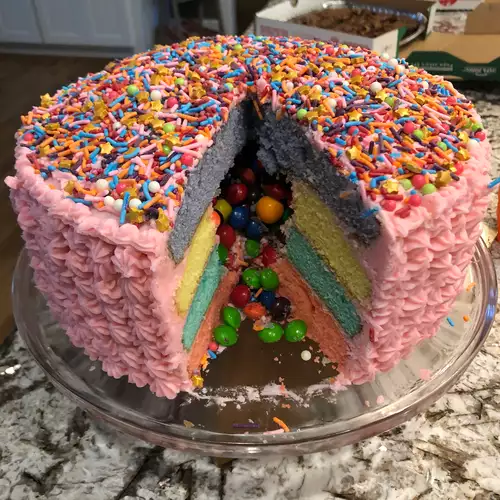

Rainbow Pinata cake

Description
This is not just any old cake but a towering blue, green, purple, and pink layered cake filled with candies like a pinata.
Ingredients
- 1 teaspoon salt
- 3 3/4 cups sifted all-purpose flour
- 3/4 teaspoon baking soda
- 1 1/2 cups unsalted butter, at room temperature
- 3/4 teaspoon baking powder
- 2 cups white sugar
- 1 tablespoon vaniall extract
- 5 eggs, at room temperature
- 2 drops green gel food coloring
- 1 1/2 cups buttermilk, at room temperature
- 2 drops purple gel food coloring
- 2 drops blue gel food coloring
- 2 drops pink gel food coloring
Frosting
- 1(4 ounce) package cream cheese, softened
- 7 cups confectioners' sugar
- 1 1/2 cups unsalted butter, at room temperature
- 1/4 cup heavy whipping cream
- 1 tablespoon vanilla extract
- 1/8 teaspoon salt
- 1 drop pink gel food coloring(optional)
Steps
- Preheat oven to 350 degrees F (175 degrees C). Grease and lightly flour four 9-inch cake pans.
- Whisk flour, 1 teaspoon salt, baking powder, and baking soda together in a bowl.
- Beat 1 1/2 cup butter in a stand mixer fitted with the paddle attachment until creamy, about 1 minute. Beat in white sugar on high speed, scraping the bowl with a spatula as needed, until fully incorporated, about 5 minutes. Reduce speed to medium-high; beat in eggs one at a time. Beat in 1 tablespoon vanilla extract.
- Mix flour mixture into the creamed butter mixture in 3 additions, alternating with buttermilk, until batter is smooth and slightly thick.
- Divide batter evenly among 4 bowls. Tint each portion of batter with green, blue, purple, or pink food coloring; stir until smooth. Pour batter into the prepared baking pans.
- Bake in the preheated oven until a toothpick inserted into the center comes out clean, about 25 minutes. Set baking pans on wire racks and let cakes cool completely, about 25 minutes.
- Beat 1 1/2 cup butter and cream cheese in a stand mixer fitted with a clean paddle attachment until creamy, about 2 minutes. Add confectioners' sugar, heavy cream, and 1 tablespoon vanilla extract; beat on low speed for 30 to 60 seconds.
- Increase speed to high and beat frosting until fluffy, about 3 minutes. Scrape down the sides of the bowl as needed. Beat in 1/8 teaspoon salt.
- Cut a 4-inch circle out of the center of 2 cake layers using a round cookie cutter.
- Place one of the intact cake layers on a cake stand or serving plate. Frost the top using an offset spatula or butter knife. Position one of the cake rings on top. Spread frosting over the top and inside the circle. Repeat with second cake ring. Fill the hole with candies and sprinkles. Place remaining cake layer on top. Frost the top and sides of the entire cake.
- Tint any remaining frosting with pink food coloring and pipe decoratively over the cake. Cut cake into slices; spoon any candies that spill out over the slices.